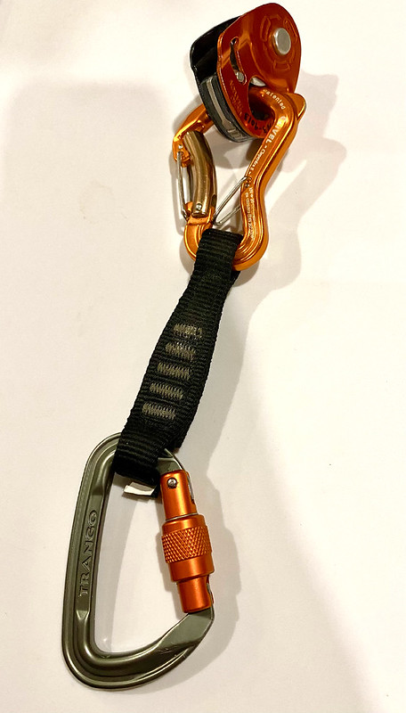
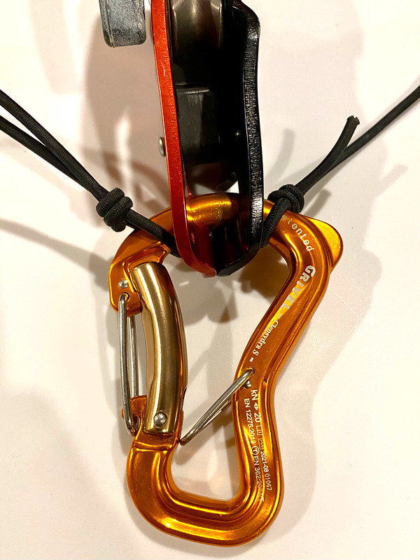
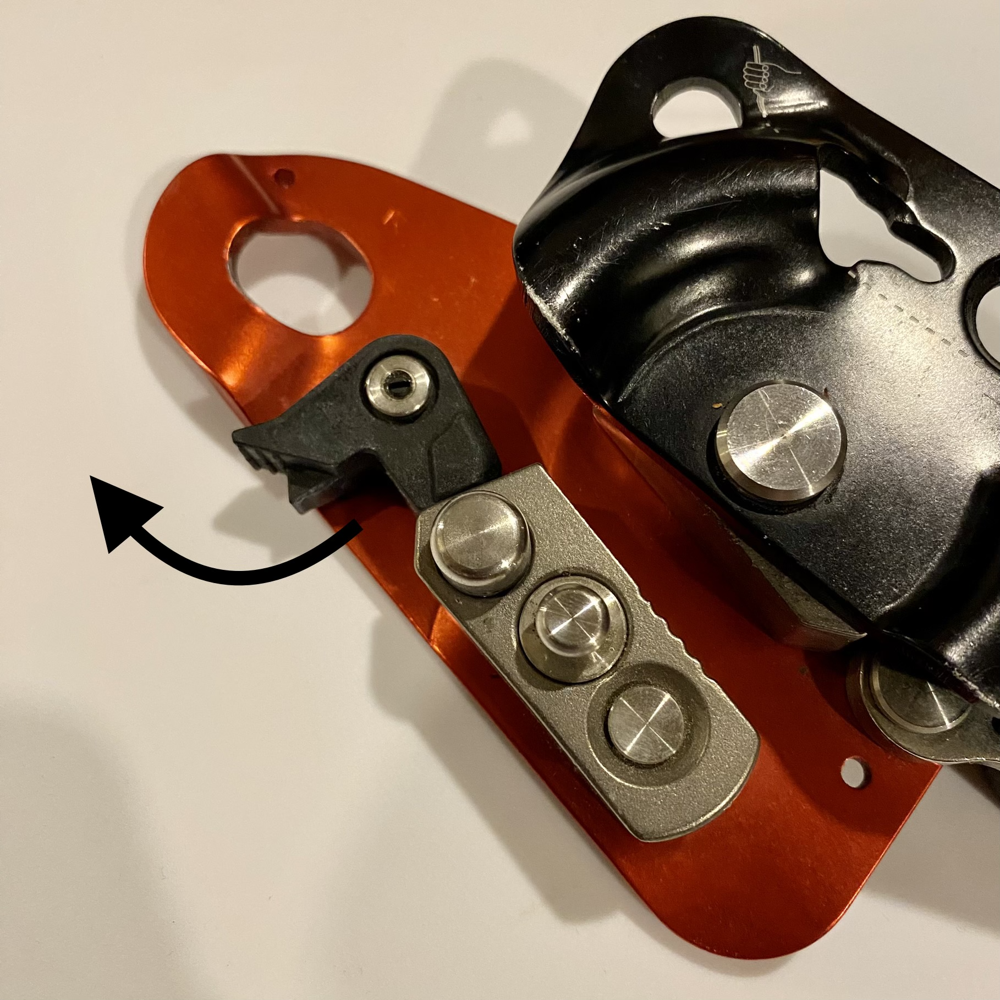
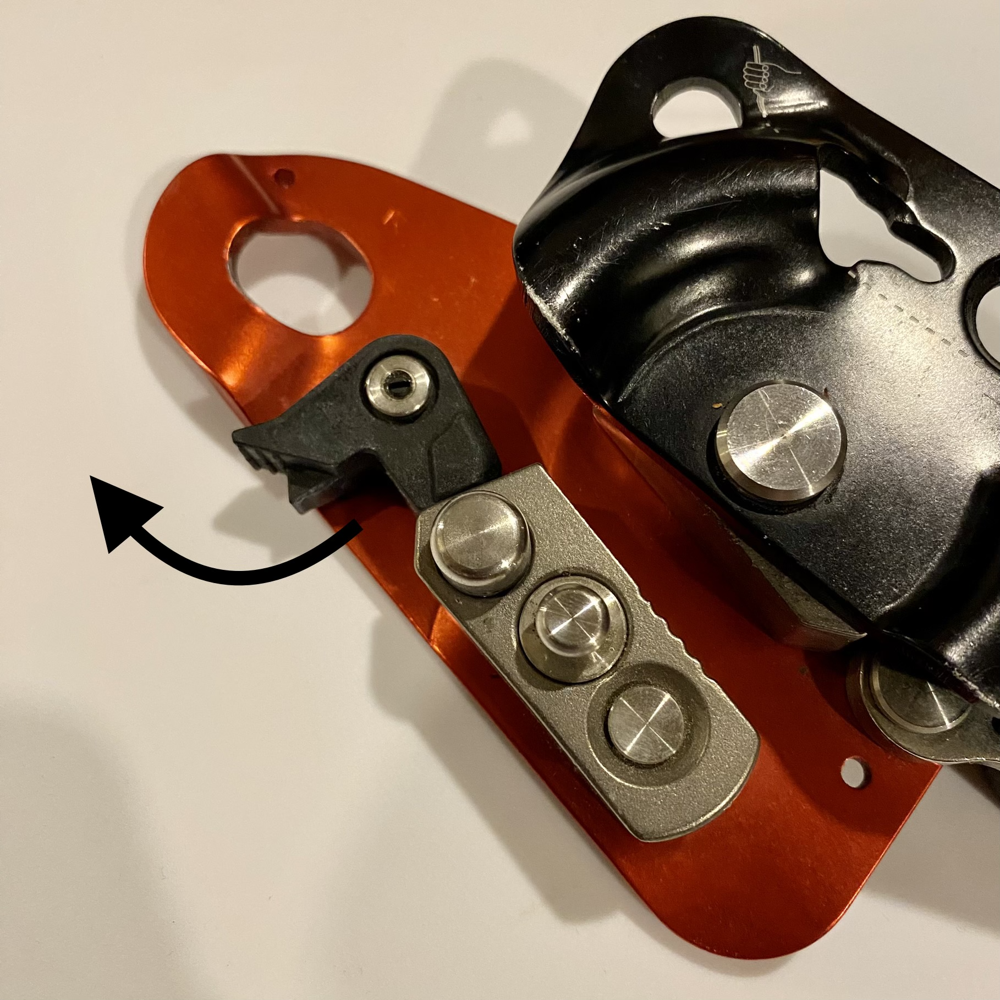

How to Top Rope Solo with the LOV3 and the Micro Traxion

Introduction
Top rope (“TR”) soloing is an advanced style of climbing in which a climber uses ascending devices on a fixed rope to climb a pitch without the need for a belayer to manage slack. There are a many tried-and-true systems that work for TR soloing, but many are lacking in terms of convenience or safety. Most require a complex transition into lowering mode, which can be frustrating and open up opportunities for error. Some use a single device with no back-up should the device fail. In this guide, you will learn how to use the TAZ LOV3 as your main ascender and descender with a Petzl Micro Traxion as a back-up. These devices make climbing and lowering a breeze, and the non-intrusive back-up and lack of a complex transition to lowering mode make it safer than many others out there.
Neither the LOV3 nor the Micro Traxion were designed for use in top rope soloing. Use at your discretion.
⚠ Warning! This is advanced stuff. ⚠
- ▸ TR soloing is dangerous and should only be attempted by advanced climbers with a strong background in roped climbing and self-rescue.
- ▸ Unanticipated user error and mechanical failures beyond the scope of this guide are likely and can result in serious injury or death.
- ▸ Consult a guide or other authorized instructor before attempting.
Why the TAZ LOV3?
The TAZ LOV3 is a non-toothed fall arrest device and descender designed for people who work-at-height. When used for TR soloing, it provides reliable, immediate catches and allows you to lower quickly and easily without the need for managing your own slack, or a complicated transition into lowering mode. This minimizes opportunities for error and is great for projecting routes. The device is unfortunately quite expensive, but currently one of very few devices that also functions as a descender (the main alternatives being Rock Exotica’s more expensive Unicender, or the Gri Gri, which requires you to manage your own slack).
Why the Petzl Micro Traxion?
The Petzl Micro Traxion (“MT”) is a compact, lightweight, toothed progress capture device. As a back-up to the LOV3, it is non-intrusive, reliable, and easy to disengage for a quick transition into rappel mode, making it a great choice for those hesitant to use a back-up.
Why use a back-up device?
Although many people TR solo with a single device and live to tell the tale, the reality is, without a back-up, a single error or device malfunction can lead to serious injury, or even death. The slight inconvenience of a back-up device is a small price to pay for something that may very likely save your life one day.
What You Will Need
- ▸ Rope: 9.5-10.5mm static line ( ≤ 4% static elongation )
- ▸ Top Ascender/Descender: TAZ LOV3
- ▸ Bottom/Back-up Ascender: Petzl Micro Traxion
- ▸ 1/8” bungee shockcord
- ▸ 11 cm quickdraw sling
- ▸ 3 small auto-locking carabiners
- ▸ 1 standard carabiner for weighting rope
The Process
- Fix your rope to a solid top anchor.
- Rappel on a single strand, placing directional gear as necessary.
- Weight the rope.
- Connect both devices to your rope and to your belay loop.
- Loop bungee cord around the back of your neck to keep the LOV3 taught.
- Ensure that the MT is in engaged in progress-capture mode before ascending.
- Climb on!
- Descend.
Weight the Rope
Adding some weight to the end of your rope keeps the rope taught and allows it to feed smoothly through your devices.To weight your rope:
- Tie a clove hitch to a carabiner beneath your devices. Ensure the knot is high enough to prevent the load you attach from touching the ground when the rope is weighted.
- Clip on only as much weight as you find allows your rope to feed smoothly.
A full 32oz Nalgene water bottle, a pair of shoes, or a canvas bag filled with some gear from your pack should do the trick.
[IMAGE - Weighted rope]
Connect the Devices to the Rope
TAZ LOV3
- Press the button on the LOV3 to open the device.
- Insert your rope into the device as shown below.
- Close the device.
- Connect a locking carabiner to the LOV3 to lock the device closed.
- Ensure that the bungee cord is attached to the carabiner on each side of the device.
[IMAGE - LOV3 open with rope inserted. Arrows denoting anchor/climber for clarity.]
[IMAGE - LOV3 closed with rope inserted. Arrows denoting anchor/climber for clarity.]
Petzl Micro Traxion
- Attach a small locking carabiner to each end of an 11cm quickdraw sling.
- Open the Micro Traxion and insert your rope as show below.
- Close the device.
- Connect the device to a locking carabiner on either end of the quickdraw sling.
- Lock the carabiner.
Always ensure the MT is engaged in progress capture mode before ascending, and check periodically while climbing.

[IMAGE - MT open with rope inserted. Arrows denoting anchor/climber for clarity.]
[IMAGE - MT closed with rope inserted. Arrows denoting anchor/climber for clarity.]
Connect the Devices to Your Harness
- Attach the LOV3's locking carabiner to the belay loop on your harness.
- Lock the LOV3's carabiner.
- Attach the locking carabiner on the opposite end of the MT's quickdraw sling to your belay loop beneath the LOV3.
- Lock the MT's carabiner.
- Ensure that all carabiners are locked before climbing.
[IMAGE - Devices attached to harness in proper orientation]
How to Keep the LOV3 Taught
- Take a length of bungee cord that is long enough to wear around the back of your neck when attached to the LOV3’s carabiner, but short enough to keep the LOV3’s carabiner upright and the device taught near your stomach.
- Tie a small overhand loop on each end of the bungee cord.
- Slide the loops onto the LOV3’s carabiner with the LOV3 seated between them.
- Stretch the loop over your head and wear around the back of your neck.

[IMAGE - LOV3 in proper orientation with bungee around climber neck]
How to Descend with the LOV3
- Ensure that you are in a hanging position with your weight fully supported by the LOV3.
- Disengage the MT, and use the LOV3’s handle to descend.
To stop a rapid descent, simply release your hand from the handle.

[GIF - lifting handle to descend?]
Failure Modes
- ▸ There are several documented ways in which these devices can fail to catch your fall.
- ▸ This is by no means an exhaustive list.
- ▸ Always tie at least one catastrophe knot to prevent a ground fall in the event of an unexpected device failure.
→ Keep your devices separate.
If your devices collide, they can fail to function normally. Keeping the LOV3 taught against your stomach with the bungee cord necklace and allowing the MT to trail further below you with the quickdraw sling helps to prevent this. Make sure your devices stay separate at all times.See: How to Keep the LOV3 Taught
→ Tab on the MT
The MT has a small tab on the locking mechanism that can cause it to lock open while climbing. This disengages progress capture mode and prevents the device from catching you if you fall and your primary device fails. Some people file this tab off to prevent this issue. If you choose not to do this, be sure to check the MT periodically while climbing to ensure that it is still in progress capture mode.
→ Plastic Cleat on the TAZ LOV3
The TAZ LOV3 has a plastic cleat that is involved in initiating the locking mechanism. On rare occasions this cleat can get stuck, preventing the device from stopping a fall as quickly (or at all). Some people file this cleat slightly to prevent this.This issue has been eliminated in the newer version of the LOV3. To test which version you have, push the plastic cleat upwards (as shown below) and see if you can get it to stick in the open position. If you cannot get it to stick, you likely have the newer version, so this will be less of a concern.
 


⚠ Additional Warnings and Considerations ⚠
- ▸ Long hair, loose clothes, slings and other dangling accessories can get sucked into your devices and prevent them from catching you. Keep long hair tied back and completely out of the way (even a long ponytail can get caught) and wear a fitted top with no dangling accessories.
- ▸ After you leave the ground, and any time you climb past any ledges, it is a good idea to tie a catastrophe knot in your rope. A one-handed slip knot works great for this.
- ▸ As always, be considerate of other climbers and share the crag.
Recommended Gear
These are the items I have used and enjoyed. Feel free to diverge from this list and find the gear that works for you.
Bungee Shockcord
Carabiners
Ropes
Quickdraw Sling
[ To Do: ]
-Add all missing images.
-Add more structure and design elements that make it feel cleaner, clearer, and easy to focus on individual sections.
-Check for reduncies/clutter in code and simplify.
-Review all sections for clarity and ensure all needs/values are addressed.
-Change image at top / appearance of top.
Jump links / scroll detection / JS?